以下文章来源于GSC BJ ，作者GSC Beijing
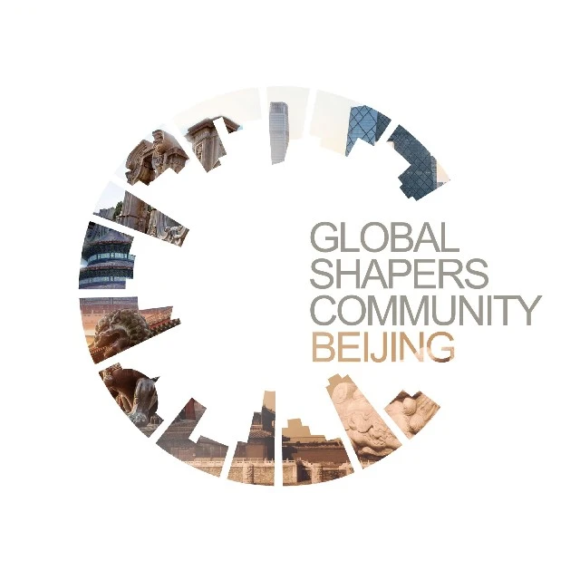
全球杰出青年社区（Global Shapers Community）是“达沃斯”世界经济论坛发起，由具备杰出潜力、取得巨大成就、愿意大力推动为各自社区做出贡献的青年创办和领导的网络中心。通过全球杰出青年社区网络，共同推动社区的发展。

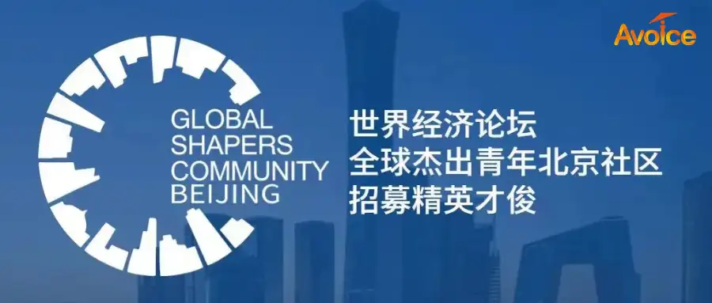

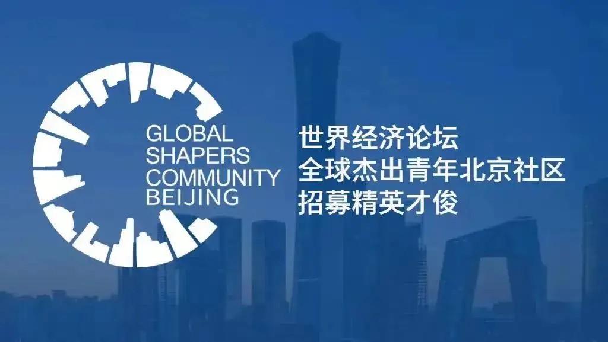
世界经济论坛与全球杰出青年社区
全球杰出青年社区（Global Shapers Community）是世界经济论坛（World Economic Forum）直属的全球性青年社区，2011年由世界经济论坛创始人克劳斯·施瓦布教授创办。全球杰出青年社区作为著名的国际性青年社群组织，旨在集个人、社区乃至全球之力，为年轻人提供一个创造未来的全球性平台。
鉴于世界经济论坛独一无二的号召力，全球杰出青年社区在人口分布、地理区域和行业方面呈现多元化的特点。这个多元化社区为了一个共同的愿望团结在一起，即发挥社区会员的无穷能量和热情，构建一个更加和平繁荣、更具包容性的世界。
全球杰出青年北京社区
BEIJING
达沃斯全球杰出青年北京社区（Global Shapers Community Beijing Hub）是达沃斯论坛在中国设立的首批青年社区之一，现在有数十位来自不同行业的优秀青年才俊汇聚于此，他们才华横溢、具有强烈使命感，在各自领域取得了优异成绩，并在区域的进步和发展中起到了积极的推动力量。
加入全球杰出青年北京社区
JOIN US
- 可以与全球400多个城市的青年社区和10000多名杰出青年建立联系，并获得他们的帮助和支持；
- 与社区成员共同发起有利于推动地区发展的活动项目，建设更好的地区面貌；
- 通过世界经济论坛网络，与来自全球的各界领袖们进行交流，并代表青年人提出倡议；
- 有机会代表世界青年群体参与世界经济论坛、世界经济论坛新领军者年会、全球杰出青年峰会等活动。
北京社区现任成员及校友（部分）
MEMBERSHIP
排名不分先后
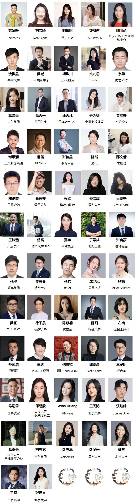
全球杰出青年北京社区现任领导
LEADERSHIP
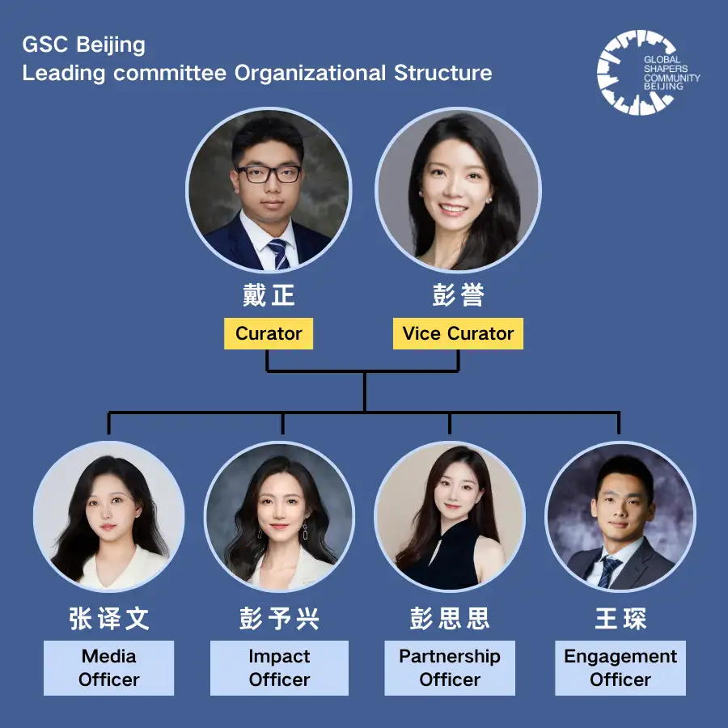
全球杰出青年北京社区申请标准
RECRUIT
1 | 获得提名时年龄在18-27岁之间 |
2 | 具有以全球公共利益为本的企业家精神 |
3 | 坚定地致力于提升领导力，更好地服务社会 |
4 | 坚守道德诚信和学术真诚的至高准则 |
5 | 具备卓尔不群的独特品质，拥有良好的中英文表达能力 |
6 | 拥有创业或内部创业经验，曾发起并完成过重大项目，或者成立过公司或组织，或者曾在某大型组织担任过重要职位，为服务社会做出过突出贡献 |
7 | 必须是分社区所在城市或临近城市的居民（北京范围内） |
8 | 愿意积极参与杰出青年社区工作，践行社区使命和目标，支持其他杰出青年的个人进步和职业发展 |
9 | 愿意和分社区携手合作，为当地社会的发展做出积极贡献 |
全球杰出青年北京社区申请流程
APPLY
声明：申请不收取任何费用，请谨防诈骗
未经过申请、审核流程和世界经济论坛网站正式身份认定的人员，不属于世界经济论坛全球杰出青年。
申请
报名时间从推送发布起至2024年7月14日24:00，点击阅读原文下载并填写申请表（提取码：3rvi） ，申请者还需附上中、英文简历（各语种简历均不多于一页），可以提交最多两份附加材料（如有视频长度不超过60秒）。文件发送至邮箱[email protected]（邮件标题为“北京社区申请+姓名”）
初选
北京社区执委会根据申请人提交的材料进行初步筛选，通过的申请者将进入面试。
面试
通过初选环节后，北京社区执委会对申请人进行面试（面试地点和时间另行通知）。
观察期
执委会将申请材料和面试反馈意见发送至中国社区总部进行初审，经过初审后的申请者即进入观察期（原则上观察期为6个月），社区执委会对观察期的申请人的表现进行评估。
申请人需要在观察期发起或参与社区主导的社会公益影响力项目，致力于当地社会发展。
审核
通过观察期的申请人将获得全球杰出青年身份认定，申请人可在世界经济论坛的网站上查询审核结果。
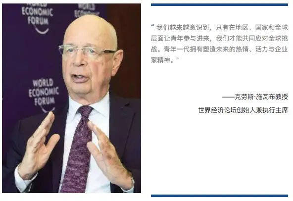
北京社区杰出青年的使命与责任
VALUE
1. 发起有利于推动地区发展的活动项目，建设更好的地区面貌
（2024年 Future Shapers青年领导力论坛）
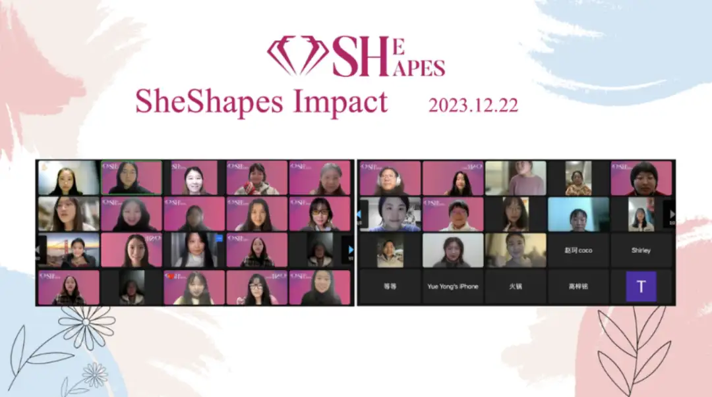
（2023-2024年 SheShapes Impact 女性公益赋能项目破冰会）
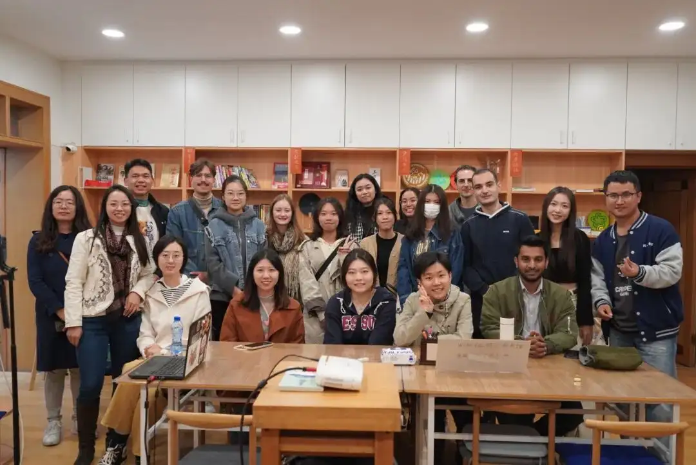
（2023年 SDG CityWalk&Talk 活动，探访公益图书馆、生态农场等）
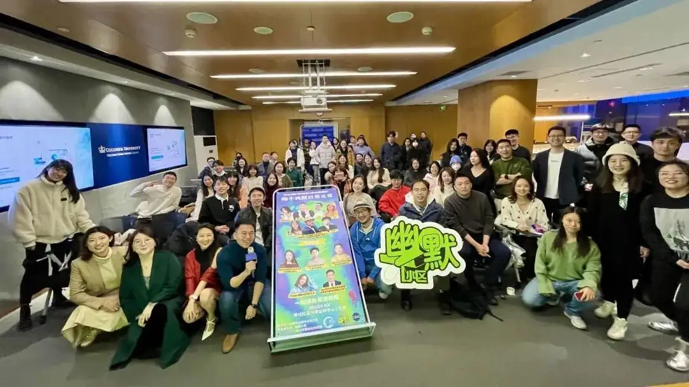
（2023年 椰子鸡ESG脱口秀项目）
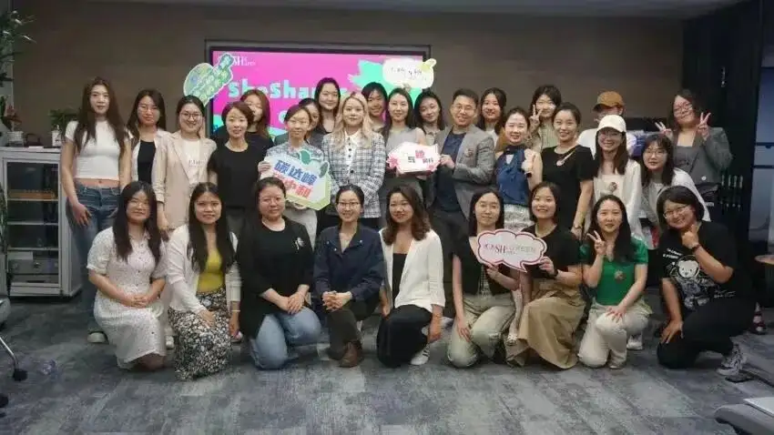
（2023年 SheShapes Green项目）
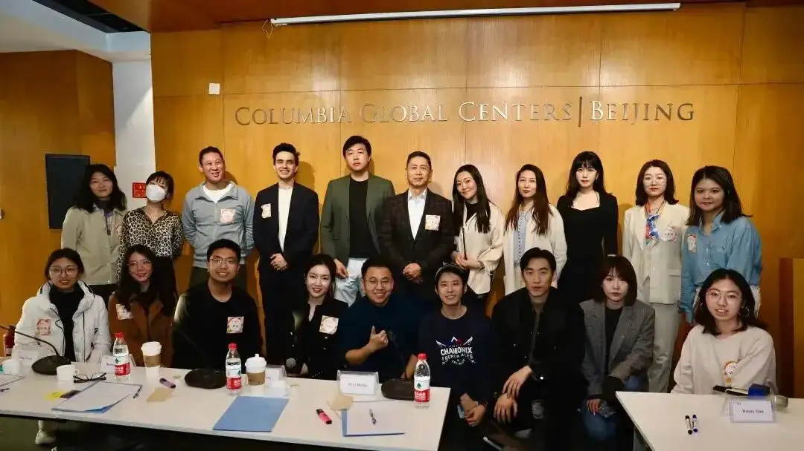
（2023年 SheShapes Entrepreneurship项目）
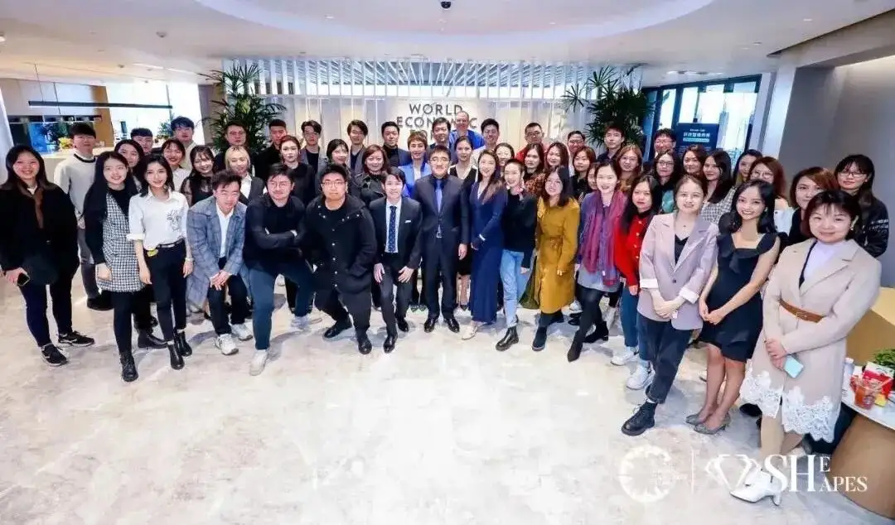
（2021年 Davos Lab: TechShapes科技大会暨SheShapes Fellowship颁奖礼）
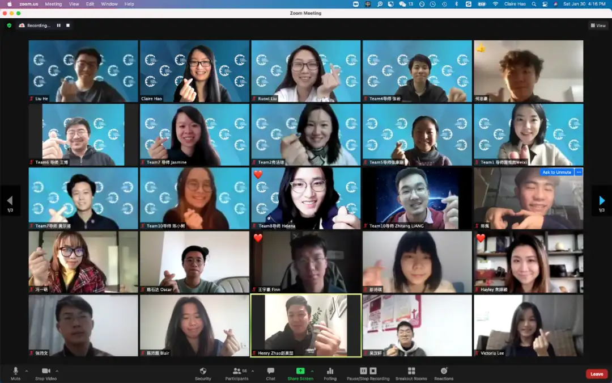
（2020年 U-Lead中国青年创变者赋能周末旗舰项目）
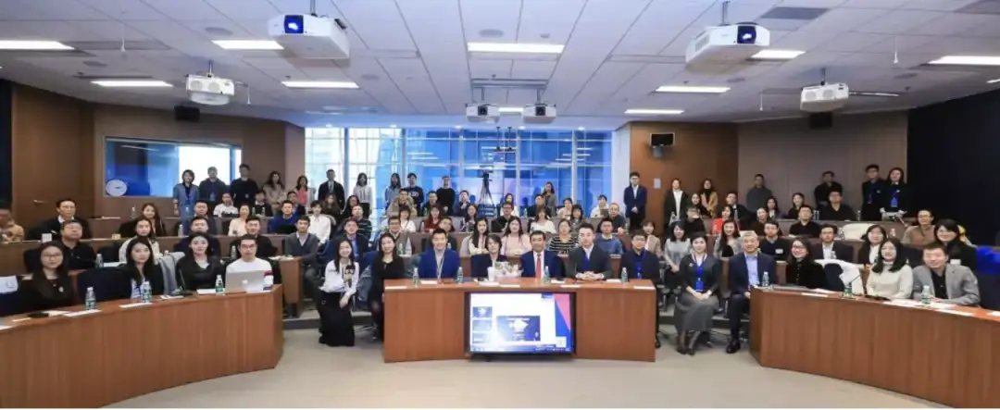
（2019年 “青年的使命与未来”全球杰出青年北京社区论坛）
✦
•
✦
2. 与全球400多个城市社区的近万名杰出青年建立联系，为彼此提供帮助和支持
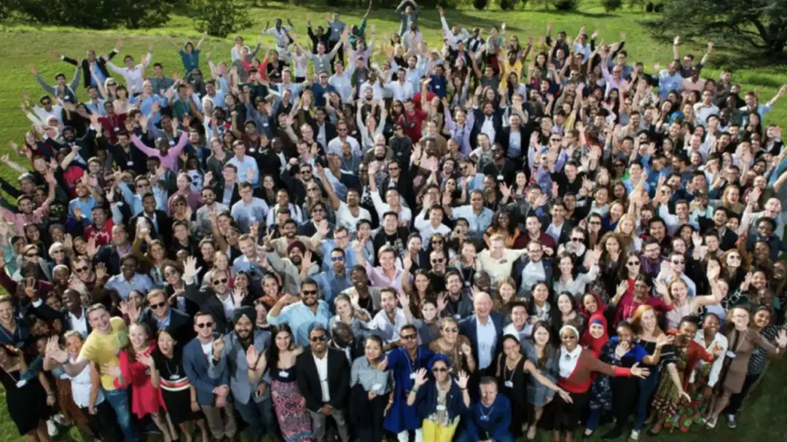
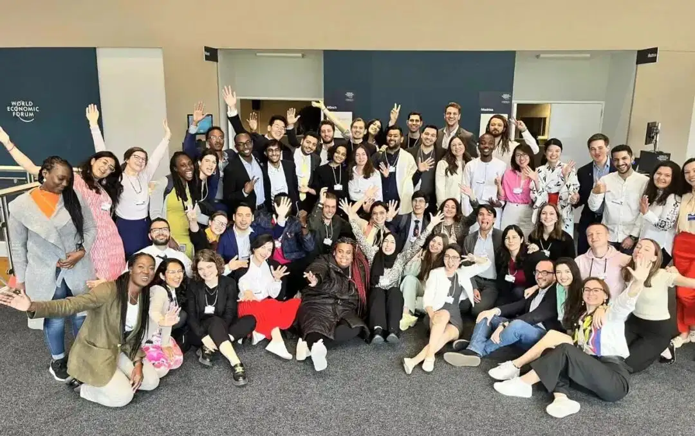
（来自世界各地的杰出青年一同合影）
✦
•
✦
3. 通过世界经济论坛网络，与全球的各界领袖们交流，代表青年人提出倡议
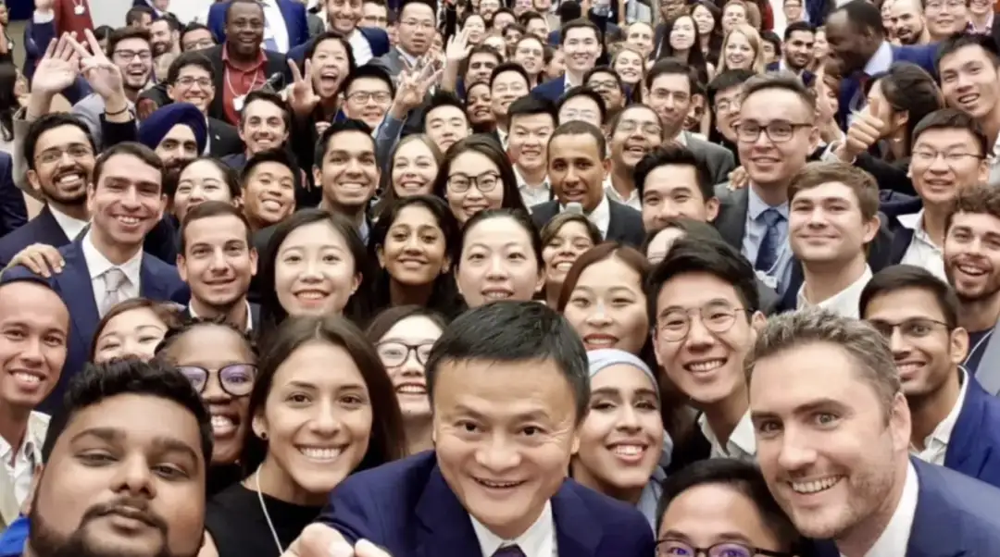
✦
•
✦
4. 代表世界青年群体参与世界经济论坛、世界经济论坛新领军者年会、全球杰出青年峰会等活动
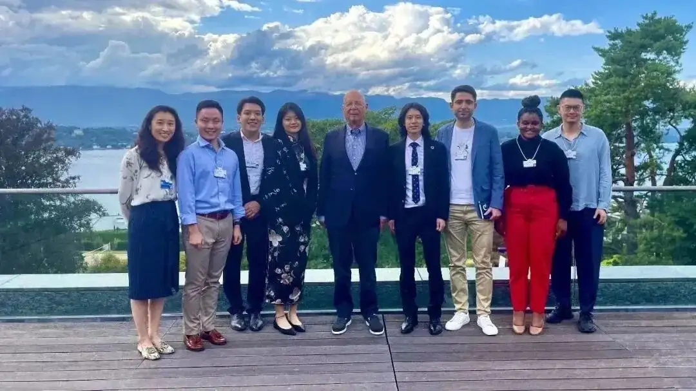
（2022年 全球杰出青年峰会-施瓦布教授与大中华地区全球杰出青年代表合影）
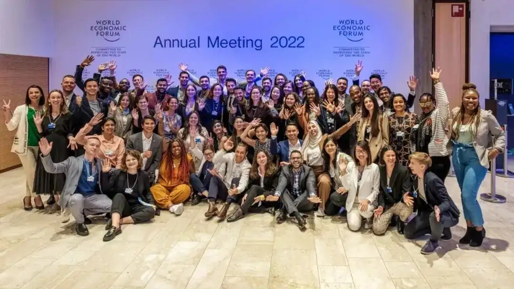
（2022年 达沃斯世界经济论坛年会-全球杰出青年代表合影）
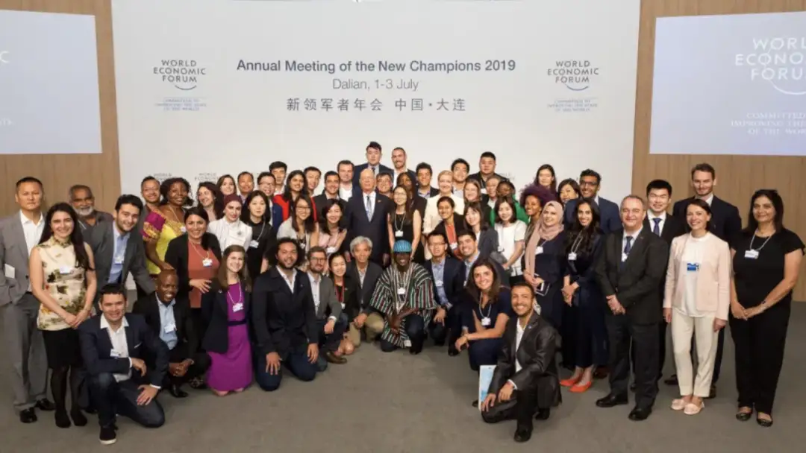
（2019年 夏季达沃斯-施瓦布教授与全球杰出青年代表合影）
如果你也想成为我们的一员，成为改变世界的一份子，请持续关注全球杰出青年北京社区，我们在这里期待与你相遇。
关于我们
想要了解更多？
了解全球杰出青年社区的更多信息，敬请登录：
www.globalshapers.org；
通过Facebook关注全球杰出青年，敬请登录：
www.facebook.com/gobalshapers；
通过Twitter关注全球杰出青年，敬请登录：
www.twitter.com/globalshapers；
或关注全球杰出青年Instagram主页@globalshaperscommunity.
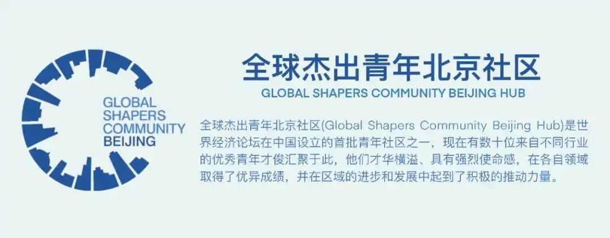